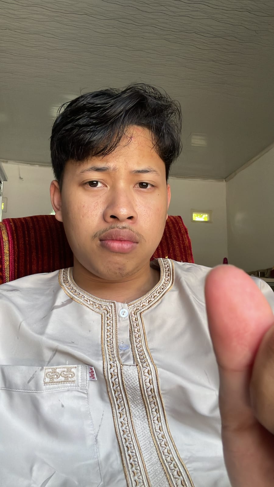
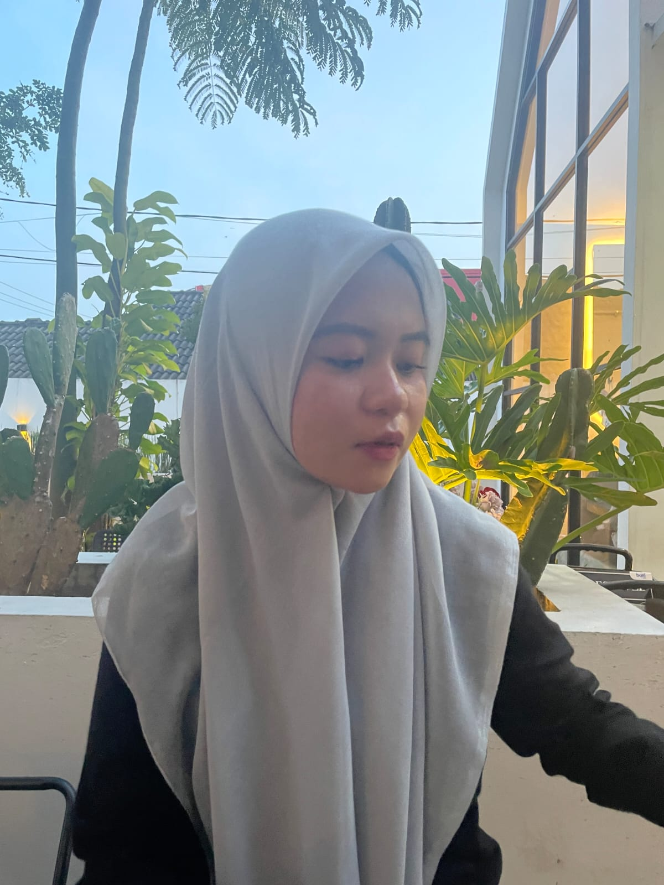
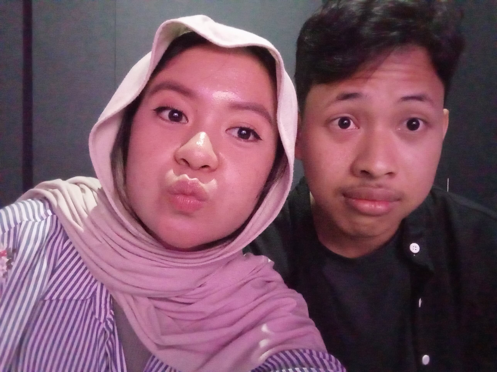

Ready Player One?



sayang, maafiin aku ya. aku sadar aku banyak salah. aku sadar aku banyak nyakitin kamu. aku sadar aku tidak seharusnya berperilaku buruk.
alhamdulillah, terimakasih aku ucapkan ke kamu. mungkin singkat 3 hari kita ga ngechat intens, walaupun masih ada chat, tapi aku sangat kangen sama kamu. kamu ga kangen ya sama aku?
aku ngerasa kamu lebih happy tanpa aku sih yang, hehe. tapi akuu tetap sayang kamu. kalau kamu rasa dalam 3 hari ini aku emang membawa pengaruh buruk ke kamu, aku minta maaf yaa. aku bakal perbaiki, aku mau perbaiki, aku menyesal atas segala sesuatu yg aku lakukan yg buruk".
sayang, sejujurnya kamu membawa warna didalam hidupku. kamu mungkin salah satu orang atau peran besar aku untuk aku bisa lebih jauh memandang hidup. aku punya target hidup yg bikin aku semangat. belum sama kamu mungkin aku bakal jadi org yg menjalani hidup tanpa punya semangat atau value yg aku ingin capai.
terimakasih selama 1 tahun ini aku bisa belajar banyak hal dari kamu. kamu bisa belajar apa yg benar dan apa yg salah, apa yg seharusnya aku lakukan, apa yg seharusnya tidak aku lakukan.
aku senang mengenal dirimu sayang. mungkin ada rasa bimbang, ada rasa bingung, ada rasa byk banget rasa bersalah ke kamuu. aku pengen banget minta ampunn, aku salah. tidak akan aku lakukan lagiii, aku benci melakukannya.
kadang rasa bersalah itu seakan" kita arah jalannya mulai salah. makanya 3 hari yg lewat ini kita reset; kamu bener manfaatkan dengan baik" dan aku juga manfaatkan dengan baik". kita perbaiki diri kita masing, dan saat ramadhan ini banyak" minta ampun beribadah supaya dosa kita bisa diampuni.
sayang, aku berharap kita akan terus bersama. semoga jalan kita dipertemukan dan semoga jalan kita dipermudah untuk menjadi insan yg baik. sehat selalu sayangku, semangat menjalani hidup. semoga banyak hal" baik yg menemui kita kedepannya. aamiin.
aku sayang kamu, i love you sayangku ❤️
from afif yg ga dikangenin